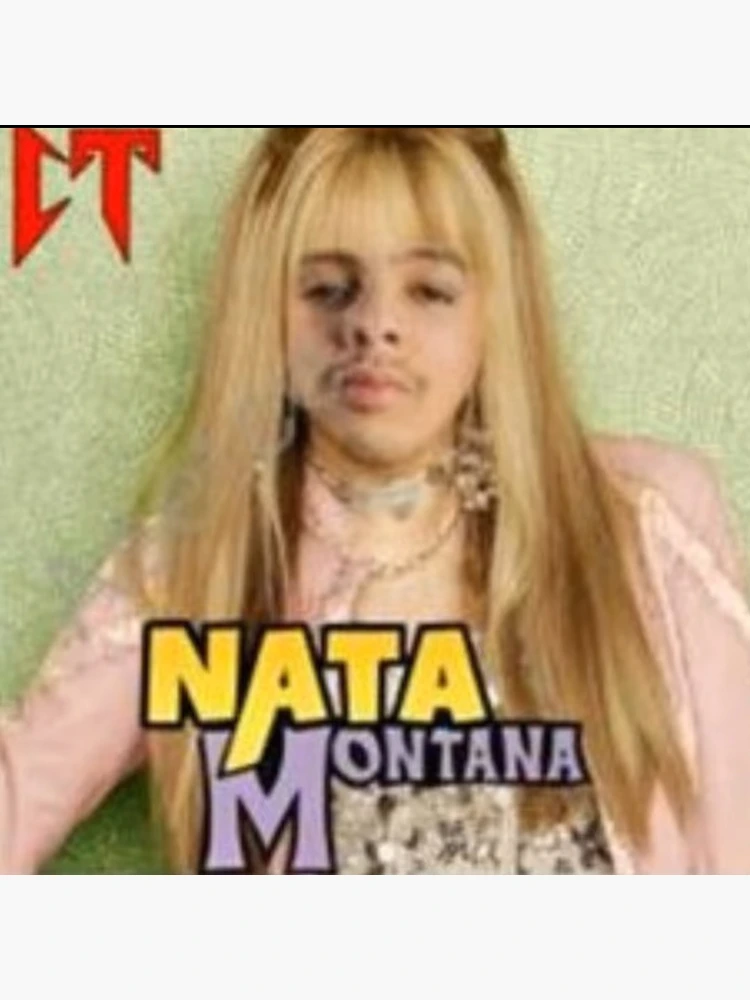
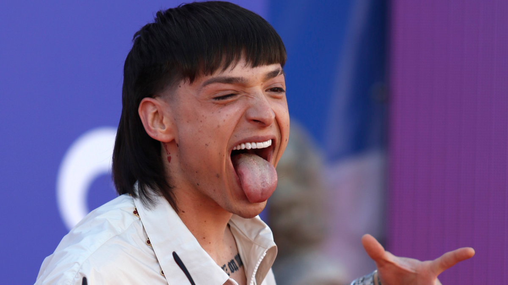
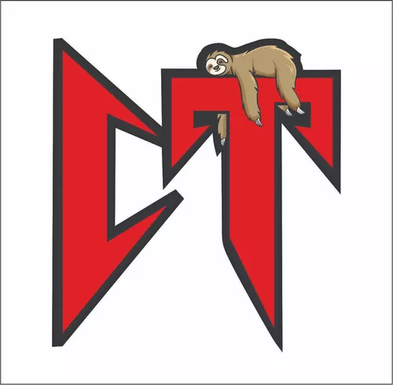

¿Qué son los Corridos Tumbados?
Los corridos tumbados son una evolución moderna del corrido tradicional mexicano. Este subgénero musical combina elementos del rap, hip-hop y trap con las melodías y estructuras típicas del corrido. Surgieron en la década de 2010 y rápidamente ganaron popularidad entre los jóvenes, especialmente en México y Estados Unidos.
Caracterizados por sus letras directas y a menudo controversiales, los corridos tumbados abordan temas de la vida cotidiana, experiencias personales, y situaciones relacionadas con el narcotráfico y el crimen organizado. A pesar de las críticas, este estilo musical ha encontrado una audiencia fiel que aprecia su autenticidad y su capacidad para reflejar la realidad de muchos jóvenes.
Los corridos tumbados son un subgénero musical dentro del corrido tradicional mexicano, que fusiona elementos del rap y hip-hop con los acordes y estructuras típicas del corrido. Este estilo ha ganado mucha popularidad en los últimos años, especialmente entre los jóvenes.
Origen del Movimiento
El término "tumbado" hace referencia a un estilo de vida relajado, a veces rebelde, que se refleja en las letras de los corridos tumbados. Aunque el corrido tradicional ha existido por muchos años, los corridos tumbados emergieron en los 2010s gracias a artistas como Ovi, Junior H, y Natanael Cano.
Características Musicales
Los corridos tumbados combinan melodías características del corrido mexicano con beats de rap. Utilizan acordes sencillos, con guitarras acústicas y efectos electrónicos, a veces acompañados de bajos profundos y sintetizadores.
Temáticas de los Corridos Tumbados
Las letras de los corridos tumbados abordan temas de la vida cotidiana, como las relaciones, el desamor, la vida en la calle, los desafíos personales, y las vivencias relacionadas con el narcotráfico y el crimen organizado, lo cual genera controversia en algunos sectores.
Influencia de los Corridos Tumbados
Este subgénero ha tenido una gran influencia en la juventud de México y otros países de habla hispana, especialmente en Estados Unidos. Su mezcla de rap, trap y música tradicional mexicana ha permitido que el corrido evolucione y se mantenga relevante en la era moderna.
Artistas Destacados
Entre los artistas más conocidos en el mundo de los corridos tumbados se encuentran Natanael Cano, Junior H, Fuerza Regida, Ovi, y el "Gringo de Oro" Ovi. Estos artistas han logrado internacionalizar el subgénero y han acumulado millones de seguidores en plataformas como Spotify y YouTube.
Peso Pluma
Peso Pluma es uno de los artistas emergentes en el género de los corridos tumbados. Con su estilo único y su habilidad para fusionar diferentes géneros musicales, ha captado la atención de muchos seguidores. Sus letras suelen abordar temas de la vida cotidiana y experiencias personales, resonando con una amplia audiencia.
Lista de canciones:
- PRC
- Rubicon
- El azul
- La patrulla
- Nueva vida
Crítica y Controversia
A pesar de su popularidad, los corridos tumbados han sido objeto de críticas. Algunos argumentan que sus letras glorifican el crimen y la violencia, mientras que otros defienden su autenticidad y su representación de las realidades sociales de muchas personas.
El Futuro de los Corridos Tumbados
Los corridos tumbados siguen evolucionando y expandiéndose. La mezcla de géneros, junto con la incorporación de nuevos sonidos y colaboraciones internacionales, asegura que este estilo continuará siendo una parte importante de la música popular en los próximos años.
Impacto Cultural
Los corridos tumbados no solo han transformado la música, sino que también han influido en la moda, el lenguaje y los valores de muchos jóvenes. Los artistas de este género son vistos como íconos de la cultura urbana contemporánea.
Conclusión
Los corridos tumbados han llegado para quedarse, y con su fusión de géneros tradicionales y modernos, siguen ganando espacio en la industria musical, mostrando la versatilidad y la creatividad de los artistas jóvenes en la actualidad.
Tipos de Corridos
| Tipo de Corrido | Descripción |
|---|---|
| Corridos Tradicionales | Relatan historias de héroes, eventos históricos y leyendas populares. |
| Corridos Revolucionarios | Se enfocan en eventos y personajes de la Revolución Mexicana. |
| Corridos de Narcotráfico | Abordan temas relacionados con el narcotráfico y el crimen organizado. |
| Corridos Tumbados | Fusión moderna de corridos con rap, hip-hop y trap, populares entre los jóvenes. |
Lista de definiciones:
- Corridos
- Los corridos son un género musical tradicional mexicano que narra historias de la vida cotidiana, la historia y las leyendas populares. Se caracterizan por sus letras poéticas y su ritmo pegajoso.
- Rap
- El rap es un género musical que se originó en la cultura afroamericana en la década de 1970. Se caracteriza por su ritmo rápido y sus letras habladas o cantadas de forma rítmica.
- Trap
- El trap es un subgénero del rap que se originó en la década de 1990 en el sur de Estados Unidos. Se caracteriza por sus ritmos oscuros y sus letras que abordan temas de la vida en la calle y la lucha por el éxito.
¡Dale click en la imagen!
Dale click aqui para ir al inicio